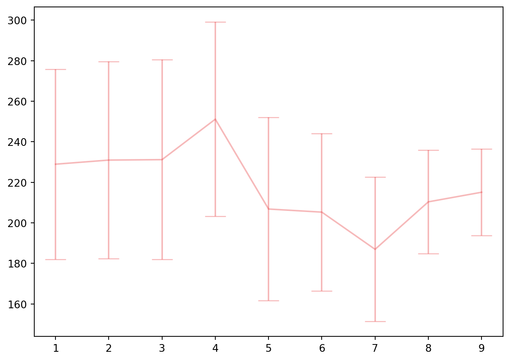
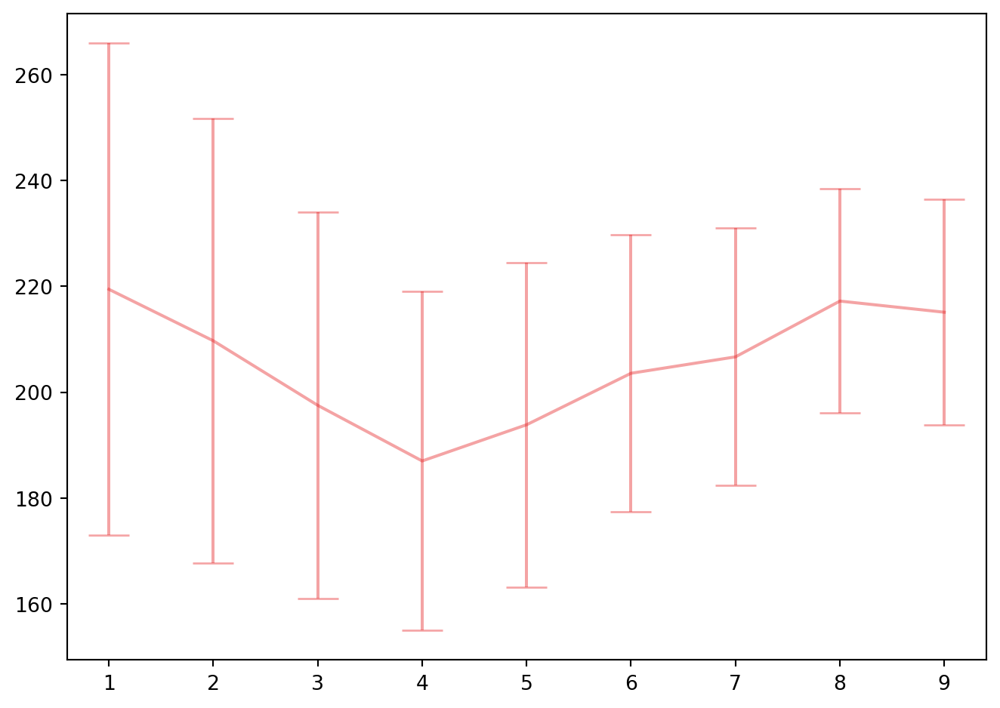

import pandas as pd; import numpy as np
import matplotlib.pyplot as plt
import statsmodels.formula.api as smf
from sklearn.preprocessing import StandardScaler
from sklearn.decomposition import PCA
from sklearn.linear_model import LinearRegression
from sklearn.cross_decomposition import PLSRegression
from sklearn.pipeline import Pipeline
from sklearn.model_selection import GridSearchCV, KFold
from sklearn.metrics import mean_squared_error
import sys
sys.path.append('../modules')
from ols_step_sk import LinearRegressionSelectionFeatureIC10 Régression sur composantes : PCR et PLS
Régression sur composantes principales (PCR)
ozone = pd.read_csv("../donnees/ozone.txt", header = 0, sep = ";", index_col=0).iloc[:,:10]
X = ozone.iloc[:,1:10]
y = ozone.iloc[:,:1]
reg = smf.ols('O3 ~ T12 + T15 + Ne12 + N12 + S12 + E12 + W12 + Vx + O3v', data=ozone).fit()
reg.summary()| Dep. Variable: | O3 | R-squared: | 0.751 |
| Model: | OLS | Adj. R-squared: | 0.694 |
| Method: | Least Squares | F-statistic: | 13.37 |
| Date: | Fri, 31 Jan 2025 | Prob (F-statistic): | 1.51e-09 |
| Time: | 17:30:32 | Log-Likelihood: | -194.43 |
| No. Observations: | 50 | AIC: | 408.9 |
| Df Residuals: | 40 | BIC: | 428.0 |
| Df Model: | 9 | ||
| Covariance Type: | nonrobust |
| coef | std err | t | P>|t| | [0.025 | 0.975] | |
| Intercept | 54.7278 | 17.279 | 3.167 | 0.003 | 19.806 | 89.650 |
| T12 | -0.3518 | 1.573 | -0.224 | 0.824 | -3.531 | 2.827 |
| T15 | 1.4972 | 1.538 | 0.974 | 0.336 | -1.611 | 4.605 |
| Ne12 | -4.1922 | 1.064 | -3.941 | 0.000 | -6.342 | -2.042 |
| N12 | 1.2755 | 1.363 | 0.936 | 0.355 | -1.480 | 4.031 |
| S12 | 3.1711 | 1.911 | 1.660 | 0.105 | -0.691 | 7.033 |
| E12 | 0.5277 | 1.943 | 0.272 | 0.787 | -3.399 | 4.454 |
| W12 | 2.4749 | 2.072 | 1.194 | 0.239 | -1.713 | 6.663 |
| Vx | 0.6077 | 0.486 | 1.251 | 0.218 | -0.374 | 1.589 |
| O3v | 0.2454 | 0.096 | 2.543 | 0.015 | 0.050 | 0.440 |
| Omnibus: | 0.252 | Durbin-Watson: | 1.887 |
| Prob(Omnibus): | 0.881 | Jarque-Bera (JB): | 0.364 |
| Skew: | 0.153 | Prob(JB): | 0.833 |
| Kurtosis: | 2.716 | Cond. No. | 859. |
Notes:
[1] Standard Errors assume that the covariance matrix of the errors is correctly specified.
mod_lin9v = LinearRegression()
mod_lin9v.fit(X,y)
np.round(mod_lin9v.coef_,2)array([[-0.35, 1.5 , -4.19, 1.28, 3.17, 0.53, 2.47, 0.61, 0.25]])reg_bic = LinearRegressionSelectionFeatureIC(crit="bic")
reg_bic.fit(X, y)
X.columns[reg_bic.selected_features_]Index(['T15', 'Ne12', 'Vx', 'O3v'], dtype='object')cr = StandardScaler()
acp = PCA(n_components=9)
pipe_acp = Pipeline(steps=[("cr", cr), ("acp", acp)])
pipe_acp.fit(X)
Xortho = pipe_acp.fit_transform(X)
reg_bic.fit(Xortho, y)
varsel = reg_bic.selected_features_
varsel[0, 4]step_cr = pipe_acp.named_steps["cr"]
stdX = step_cr.scale_
meanX = step_cr.mean_
coef_pcr =reg_bic.coef_
step_acp = pipe_acp.named_steps["acp"]
P = step_acp.components_[reg_bic.selected_features_,]
betafinpcr = P.T.dot(coef_pcr.T)[:,0]/stdX
intercept = y.mean(axis=0) - meanX.dot(betafinpcr.T)
np.round(np.append(intercept, betafinpcr),2)array([ 5.279e+01, 4.100e-01, 4.700e-01, -2.540e+00, -8.700e-01,
2.000e-02, 1.060e+00, -8.500e-01, 2.300e-01, 3.400e-01])cr = StandardScaler()
acp = PCA()
reg = LinearRegression()
pipe_pcr = Pipeline(steps=[("cr", cr), ("acp", acp), ("reg", reg)])
param_grid_pcr = { "acp__n_components" : list(range(1,10))}
kf = KFold(n_splits=4, shuffle=True, random_state=0)
cv_pcr = GridSearchCV(pipe_pcr, param_grid_pcr, cv=kf, scoring = 'neg_mean_squared_error', n_jobs=3).fit(X, y)import matplotlib.cm as cm
colors = cm.Set1(range(1))
colors2 = colors
colors2[:,3] = colors2[:,3] -0.7
fig, ax1 = plt.subplots(1, 1)
ax1.errorbar(list(range(1,10)), -cv_pcr.cv_results_["mean_test_score"],
cv_pcr.cv_results_["std_test_score"]/kf.n_splits**0.5 , capsize=10, c=colors[0], ecolor=colors2[0])
fig.tight_layout()
bestpcr = cv_pcr.best_estimator_
cv_pcr.best_params_
step_reg = bestpcr.named_steps["reg"]
coef_pcr = step_reg.coef_
step_cr = bestpcr.named_steps["cr"]
stdX = step_cr.scale_
meanX = step_cr.mean_
step_acp = bestpcr.named_steps["acp"]
P = step_acp.components_
betafinpcr = P.T.dot(coef_pcr.T)[:,0]/stdX
intercept = y.mean(axis=0) - meanX.dot(betafinpcr.T)
np.round(np.append(intercept, betafinpcr),2)array([58.33, 0.68, 0.44, -4.45, 1.24, 2.11, 1.84, 0.6 , 0.15,
0.25])Régression aux moindres carrés partiels (PLS)
regpls = PLSRegression()
param_grid_pls = { "n_components" : list(range(1,10))}
kf = KFold(n_splits=4, shuffle=True, random_state=0)
cv_pls = GridSearchCV(regpls, param_grid_pls, cv=kf, scoring = 'neg_mean_squared_error').fit(X, y)colors = cm.Set1(range(1))
colors2 = colors
colors2[:,3] = colors2[:,3] -0.6
fig, ax1 = plt.subplots(1, 1)
ax1.errorbar(list(range(1,10)), -cv_pls.cv_results_["mean_test_score"], cv_pls.cv_results_["std_test_score"]/kf.n_splits**0.5 , capsize=10, c=colors[0], ecolor=colors2[0])
fig.tight_layout()
bestpls = cv_pls.best_estimator_
cv_pls.best_params_
bestpls.fit(X,y)
bestpls.coef_array([[ 0.41610174, 0.53217084, -4.4244714 , 0.37042358, 1.60857405,
0.98429296, 0.56053927, 0.24800203, 0.26473814]])scalerX = StandardScaler().fit(X)
stdX = scalerX.scale_
meanX = scalerX.mean_
betafinpls = bestpls.coef_[:,0]/stdX
intercept = y.mean(axis=0) - meanX.dot(betafinpls.T)
np.append(intercept, betafinpls)array([7.95723726e+01, 8.99163083e-02, 8.43936432e-02, 1.65784166e-01,
1.98000066e-01, 2.80306490e-01, 1.88545955e-01, 1.71475028e-01,
3.09237815e-02, 1.68441318e-02])